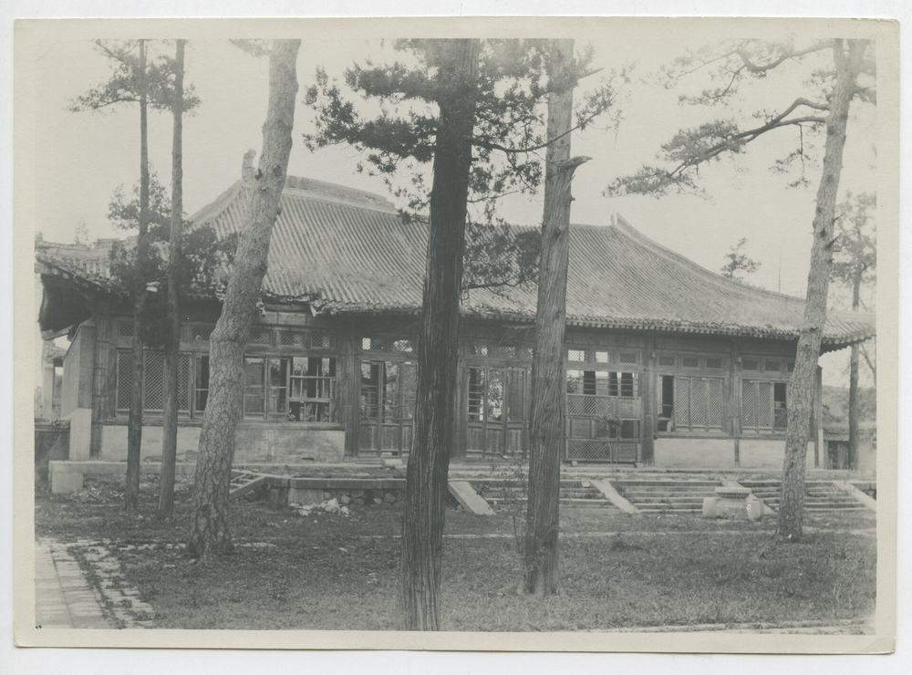
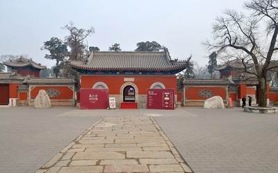
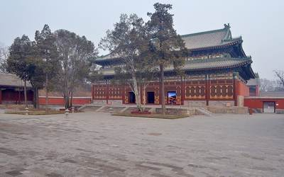
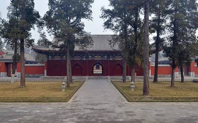
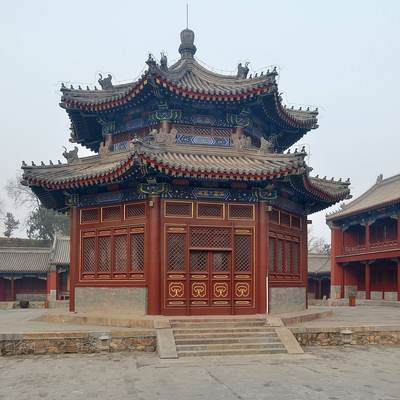
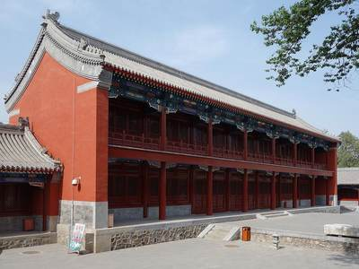
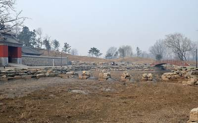
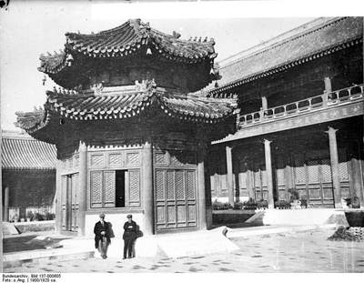

正觉寺


What it was
正觉寺 Zhengjue Si, "Temple of Perfect Enlightenment", stands on the west side of 绮春园 Qichun Yuan, outside the garden wall but linked to it by a back gate (S228). It was completed in 1773 (乾隆三十八年) as a Tibetan Buddhist temple (S228; E0506; E0683 gives 1773-74), served by a 达喇嘛 and 40 lamas sent from 宝谛寺 Baodi Si (E0683); it was the only temple of the three gardens run by lamas (E0681). It faces south with five buildings on the axis: a three-bay gate with Qianlong's plaque in four scripts, bell and drum towers, the five-bay 天王殿 Tianwang Dian, the seven-bay 三圣殿 Sansheng Dian on a stone terrace, the 文殊亭 Wenshu Ting, and the seven-bay 最上楼 Zuishang Lou; a monks' yard of 8 buildings and 22 bays lay on the east (E0681). Other names are reported: 正觉殿 for 三圣殿 and 殊像阁 for 文殊亭 (E0682, E0684, both from search extracts). When British troops burned 绮春园 on 18 October 1860, 正觉寺 was spared, as were 惠济祠 and 河神庙 (E0680; E0451); it also came through 1900 (S228; E0679).
Building by building
| Hall | Bays | Roof | Storeys | Faces | Sources |
|---|---|---|---|---|---|
| 山门 Shanmen | 3, with a side gate each side | 歇山 | 1 | S | S01, S49, S221 |
| 天王殿 Tianwang Dian | 5 | 1 | S | S01, S49, S221, S228 | |
| 三圣殿 Sansheng Dian | 7 | single-eaved 歇山, as on P0177 | 1 | S | S01, S49, S221, S228 |
| 文殊亭 Wenshu Ting | 1 | double eaves, octagonal | 1 | S | S01, S49, S221, S228 |
| 最上楼 Zuishang Lou | 7, with 3-bay side halls east and west | 2, with a balcony on the upper storey (P0173) | S | S01, S49, S221 |
and 6 buildings drawn on the plan without a name
The pictures
Today












Details


Not ours to copy, at the holder
- 正觉寺文殊亭内文殊菩萨全身照片 View at yuanmingyuanpark.cn
Every picture, text and drawing, hall by hall, is in the 3D view's panel.
What survives
In the early Republic it was bought by 颜惠庆 Yan Huiqing as a private villa (images removed, lamas dismissed), then sold to Tsinghua as staff housing; 三圣殿 was gone by 1933; most buildings still stood in the 1960s, and from the 1970s three district factories occupied the site (S228; E0679). Before the restoration only the gate, the 文殊亭, four side halls and 26 old trees remained; 天王殿, 三圣殿, the west 金刚殿 and the seven-bay rear tower 最上楼 were wholly or partly destroyed (S228). Phase 1, finished in October 2003, repaired 990 m2 of old buildings: the gate, 文殊亭, the east and west 五佛殿, the east and west side halls and the west corner rooms; phase 2, begun on 16 December 2009, rebuilt 2,659 m2: 天王殿, 三圣殿, 最上楼, the 六大金刚殿, the east corner rooms, side gates and service buildings; the temple opened on trial on 6 July 2011 (S228; E0679). The column bases, Sumeru base and lower wall bricks of 三圣殿 are Qing remains (S228). So the period fabric is the gate, 文殊亭, the four side halls (the 五佛殿 pair and the side-hall pair) and the west corner rooms, with the Qing base and lower walls of 三圣殿; 天王殿, 三圣殿 and 最上楼 seen today are rebuilds of 2009-11 (S228; P0428, P0429, P0431). S228 does not say whether the bell and drum towers are old or new. Site 14,300 m2, buildings 3,649 m2 (S228). A salvage dig of 2005 in front of the gate found a road base, a carriageway and house remains over about 300 m2 (E0685); a dig report on 天王殿 is known by title only (S315, E0688). Pre-restoration photographs: Sirén's view of 三圣殿 (P0177, 1918-35 by Commons, so before 1933 if the hall is the 三圣殿) and a Bundesarchiv view dated 1900 on Commons that probably shows 文殊亭 and 最上楼 (P0173).
Excavations and surveys
- 2005, 北京市文物研究所
Salvage dig for Metro Line 4 in front of the temple gate on the north bank of 万泉河: about 300 m2, a road base, a carriageway and house remains (E0685). A separate excavation report on 天王殿 exists, title only (S315, E0688).
Reconstructions by others
Modern interpretation, not evidence, and never a source for a size or a position here.
- 《圆明园正觉寺建筑研究》 (, paper figure) View at mhymy.com
- 18-minute digital restoration video shown in the main hall of 正觉寺 (郭黛姮 team, video) View at tsinghua.edu.cn
- 圆明园·正觉寺·文殊像复原设计研究 (posted by 圆明园管理处, render) View at yuanmingyuanpark.cn
- 圆明园正觉寺文殊像复原研究报告 (posted by 圆明园管理处, render) View at yuanmingyuanpark.cn
What is known of its size
| Part | What | Size | How | Grade | Source |
|---|---|---|---|---|---|
| the scene's outline on the plan | Extent, long side | 155 m ± 10 | b plan or ruin | C | S01, layers/scenes_1860, UTM 50N, minimum rotated rectangle |
| the scene's outline on the plan | Extent, short side | 92 m ± 10 | b plan or ruin | C | S01, layers/scenes_1860, UTM 50N, minimum rotated rectangle |
| the scene's outline on the plan | Area | 14000 m² ± 1400 | b plan or ruin | C | S01, layers/scenes_1860, UTM 50N, polygon area |
All 5 figures
| Part | What | Size | How | Grade | Source |
|---|---|---|---|---|---|
| temple site | Site area m2 | 14300 m | e no survey | B | S228, article |
| water inside the scene's outline | Water inside the outline | 600 m² ± 60 | b plan or ruin | B | S01, layers/water_1860 within layers/scenes_1860 |
Sources cited on this page (6)
- S01 Plan of the Yuanmingyuan Imperial Garden-Palace, unknown artist, three hanging scrolls, ink and colour on paper, 177 × 253 cm together
- S49 Blog yaffin, 【圆明园】系列15 长春园 绮春园 遗址现状
- S155 北京市文物研究所 surveys 2007-2009, mhymy ids 11467, 11480, 11446, 11301, 11419, 11559, 11669
- S221 藏传佛教与圆明园正觉寺, 圆明园管理处文史科 staff, reprinted from 《圆明园研究》第5期 on the 清代皇家园林研究中心 site, posted 2021-05-25
- S228 任敏, 圆明园正觉寺复建开放：历经两劫 幸免于难, 北京日报 via 中新网, 2011-07-07
- S315 《圆明园正觉寺天王殿考古发掘报告》, on 梦回圆明园